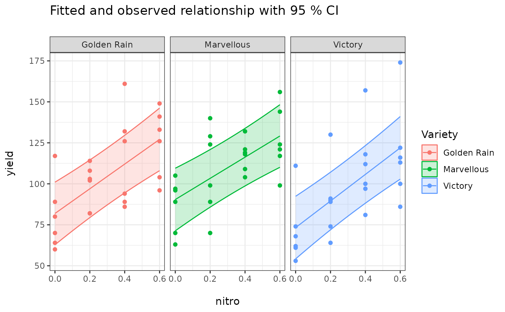
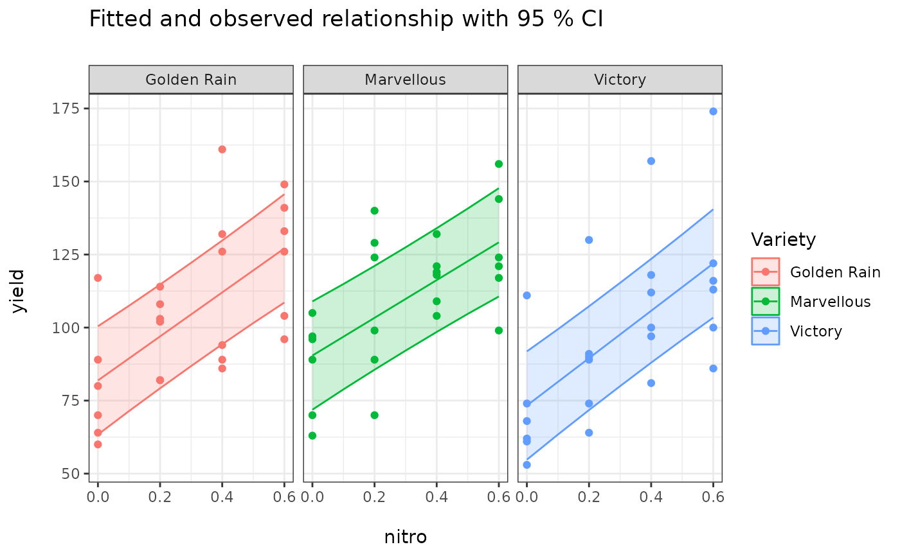

Predicted Means of a Linear Model with Covariate Variable(s)
Source:R/covariatemeans.R
covariatemeans.RdThis function obtains predicted means with graph for a new set of covariate values.
Usage
covariatemeans(model, modelterm=NULL, covariate, as.is=FALSE, covariateV=NULL,
data=NULL, level=0.05, Df=NULL, trans=NULL, transOff=0, responsen=NULL, trellis=TRUE,
plotord=NULL, mtitle=NULL, ci=TRUE, point=TRUE, jitterv=0, newwd=FALSE,
cov_reduce=mean, exclude=NULL,
weights=c("equal", "proportional", "outer", "cells", "flat"))Arguments
- model
Model object returned by
aov,lm,glm,gls,lme, andlmer.- modelterm
Name (in "quotes") for indicating which factor term's predicted mean to be calculated. The
modeltermmust be given exactly as it appears in the printed model, e.g. "A" or "A:B".- covariate
Name (in "quotes") of one the covariate variables in the
model.- as.is
A logic value to specify wheather or not using original covariate values' rage for graph, the default is FALSE.
- covariateV
A numeric vector when as.is is FALSE, then covariatemeans will produce the result for
covariateat value ofcovariateV.- data
In some cases, you need to provide the data set used in model fitting, especially when you have applied some variable trnasformation in the model.
- level
A significant level for calculating confident interval. The default value is 0.05.
- Df
A degree of freedom for calculating CI of predicted means (you can manually specified ddf here). For the above models, ddf is obtained from the function automatically.
- trans
A function object for calculating the back transformed means, e.g.
trans=exp.- transOff
When you use
trans=exp(x+1), thentransOff=1, the default is 0.- responsen
Name (in "quotes") of the back transformed response variable in the
model.- trellis
A logical variable. If set to TRUE (default), a trellis plots of predicted means with CI will be drawn.
- plotord
A numeric (or character) vector specifying the order of plotting for two or three way interaction (e.g.
plotord = c(2, 1, 3)orplotord = c("B", "A", "C")will put the second variable 'B' inmodeltermon theXaxis, the first variable 'A' as the grouping variable, and the third one 'C' as the panel variable). The defaults arec(1, 2)andc(1, 2, 3)for two and three way interactions.- mtitle
The main title in the graph.
- ci
A logical variable to indicate whether to print confidence interval. The default value is TRUE.
- point
A logical variable to indicate whether to print raw data points. The default value is TRUE.
- jitterv
A degree of jitter in x and y direction in the graph. The default is zero.
- newwd
A logical variable to indicate whether to print graph in a new window. The default value is FALSE.
- cov_reduce
How covariates that are not varied are handled when building the predicted means: a function such as
mean(the default) ormedian, or"average"to average the predictions over the observed covariate values (e.g. means adjusted for a spatial smooth in agam). SeeKmatrix.- exclude
For
gammodels: smooth terms to leave out of the predictions. The default excludes random-effect smooths. SeeKmatrix.- weights
Passed to
Kmatrix: how the cells of the factors that are not inmodeltermare weighted when averaging over them:"equal"(the default; equal weights),"proportional"(weights proportional to the frequencies of those cells in the data, the same for every mean, as SASLSMEANS / OM),"outer"(products of each factor's own frequencies),"cells"(each mean weights the cells by their own frequencies) or"flat"(equal weights over the non-empty cells). The definitions are those of emmeans.
Examples
library(predictmeans)
data(Oats, package="nlme")
fm <- lme(yield ~ nitro*Variety, random=~1|Block/Variety, data=Oats)
# library(lme4)
# fm <- lmer(yield ~ nitro*Variety+(1|Block/Variety), data=Oats)
covariatemeans(fm, "Variety", covariate="nitro")

covariatemeans(fm, "Variety", covariate="nitro", covariateV=seq(0, 0.6, 0.1))$pltdf

#> Variety xvar ses Mean LL UL factors
#> 1 Golden Rain 0.0 8.570714 81.90000 62.80326 100.99674 Golden Rain
#> 2 Golden Rain 0.1 8.150208 89.43333 71.27354 107.59313 Golden Rain
#> 3 Golden Rain 0.2 7.887150 96.96667 79.39300 114.54033 Golden Rain
#> 4 Golden Rain 0.3 7.797492 104.50000 87.12611 121.87389 Golden Rain
#> 5 Golden Rain 0.4 7.887150 112.03333 94.45967 129.60700 Golden Rain
#> 6 Golden Rain 0.5 8.150208 119.56667 101.40687 137.72646 Golden Rain
#> 7 Golden Rain 0.6 8.570714 127.10000 108.00326 146.19674 Golden Rain
#> 8 Marvellous 0.0 8.570714 90.41667 71.31993 109.51341 Marvellous
#> 9 Marvellous 0.1 8.150208 96.87500 78.71521 115.03479 Marvellous
#> 10 Marvellous 0.2 7.887150 103.33333 85.75967 120.90700 Marvellous
#> 11 Marvellous 0.3 7.797492 109.79167 92.41777 127.16556 Marvellous
#> 12 Marvellous 0.4 7.887150 116.25000 98.67634 133.82366 Marvellous
#> 13 Marvellous 0.5 8.150208 122.70833 104.54854 140.86813 Marvellous
#> 14 Marvellous 0.6 8.570714 129.16667 110.06993 148.26341 Marvellous
#> 15 Victory 0.0 8.570714 73.30000 54.20326 92.39674 Victory
#> 16 Victory 0.1 8.150208 81.40833 63.24854 99.56813 Victory
#> 17 Victory 0.2 7.887150 89.51667 71.94300 107.09033 Victory
#> 18 Victory 0.3 7.797492 97.62500 80.25111 114.99889 Victory
#> 19 Victory 0.4 7.887150 105.73333 88.15967 123.30700 Victory
#> 20 Victory 0.5 8.150208 113.84167 95.68187 132.00146 Victory
#> 21 Victory 0.6 8.570714 121.95000 102.85326 141.04674 Victory